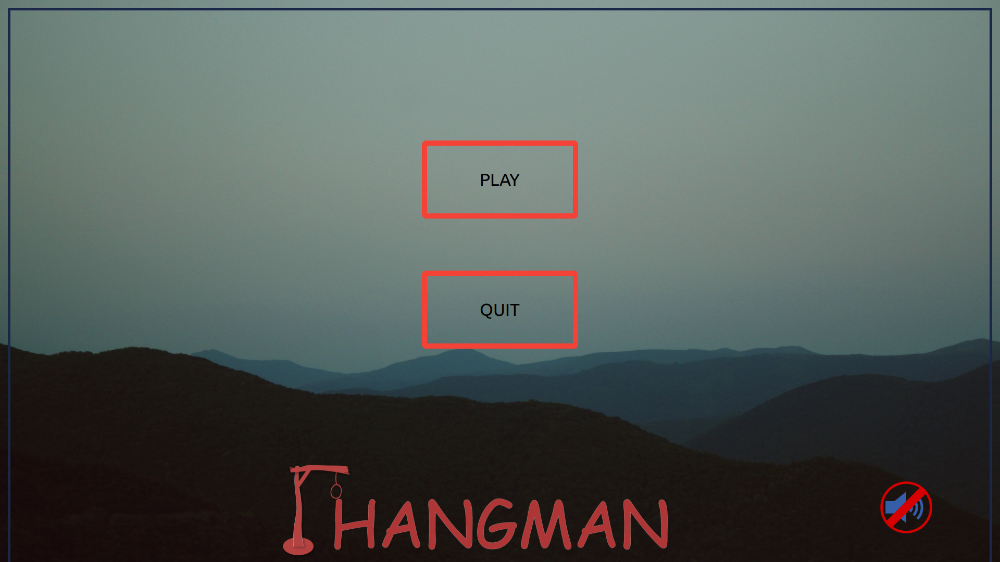
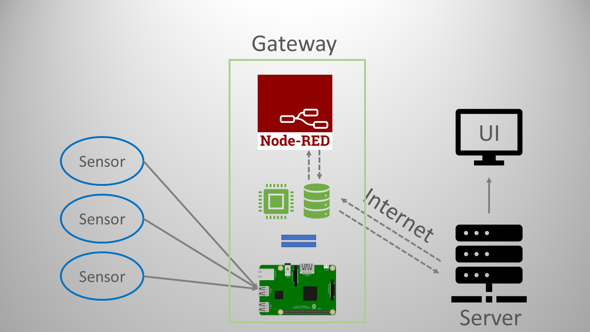
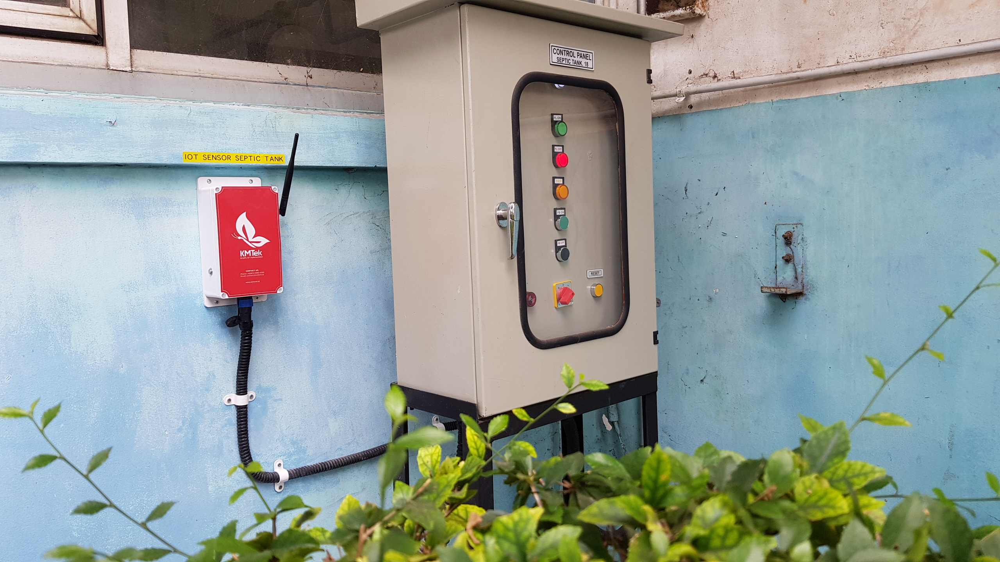
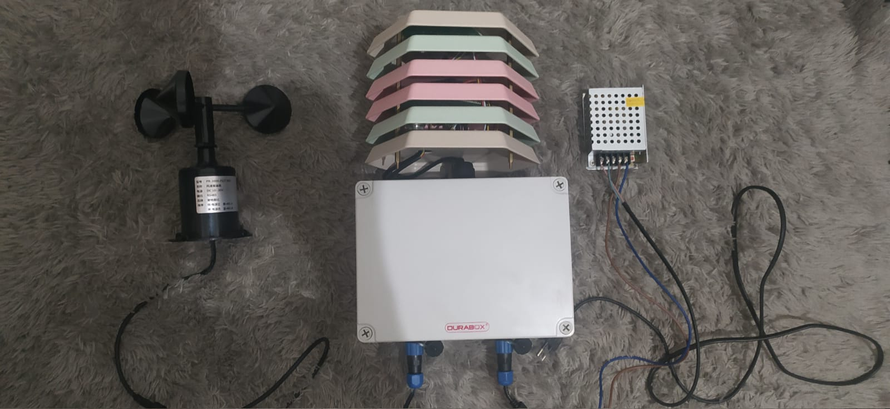

Hangman Game
The hangman game was developed using GTK 3 and C programming
language that running on Linux. Integrate with CSS and sound to
make game more interactive. This game can display image, has
touchscreen keyboard access, can be integrated with the default
keyboard, and can display a pop-up screen that adds flexibility to
the game.

Sensor Gateway
A sensor gateway is a system that integrates application developed
using the c programming language with a PostgreSQL database and
Node-Red on a single-board computer such as Raspberry Pi. This
gateway has feature to enable/disable sensor channels, set time
interval for acquisition data, has data calibration feature and
allow monitoring of the sensor data history from each active
channel.

IoT Lorawan System
This LoRa-based control and monitoring system is built using ESP32
and LoRa modules using the Lorawan communication protocol. The
system consists of 38 nodes and 1 LoRa gateway in a factory in
Cikarang, Indonesia to monitor and control pump wirelessly on each
control panel system in the factory.

Poultry Farming Monitoring
The Poultry Farming Monitoring Device is designed to monitor 6
parameters (CO2, NH3, Humidity, Temperature, Wind Speed, Light
Intensity) based on IoT. The commonication protocol used is MQTTS,
which employs the samesecurity concept standars as https to
prevent data leakage that has been a sensitive issue in IoT
development. This system is a prototype that has a "plug and play"
concept, which increases the flexibility of the sensors to be
used. The Device can store sensor measurement data locally and
provide a web server to download the data through a local network.
Using the MQTTS protocol, user can also configure the sensor
measurement interval dynamically.
{kind=link}
{kind=link}
{kind=link}
{kind=link}